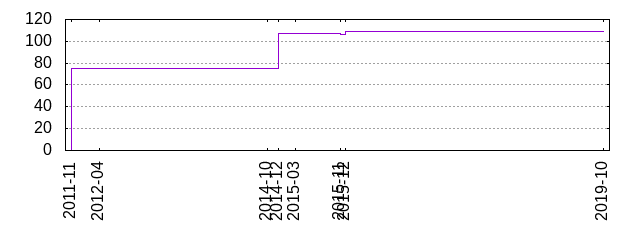
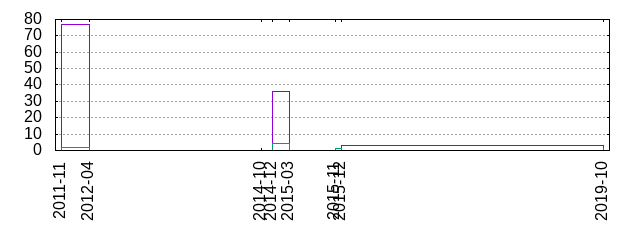

Fileschart
Files by year and month

Filechanges by year and month

Filetypes
| Extension | Count | Size |
|---|---|---|
| 3 | 40k | |
| .md | 1 | 2k |
| .gemspec | 1 | 974 |
| .rb | 22 | 23k |
| .haml | 44 | 46k |
| .gif | 3 | 172 |
| .plot | 10 | 3k |
| .js | 15 | 721k |
| .css | 4 | 143k |
| .scss | 2 | 4k |
| .eot | 1 | 20k |
| .svg | 1 | 62k |
| .ttf | 1 | 41k |
| .woff | 1 | 23k |